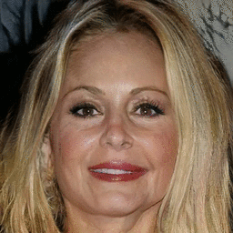
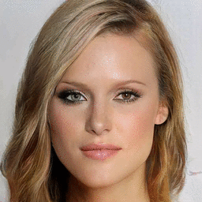
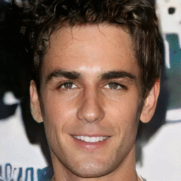
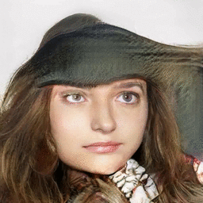

| Pose | Age | Gender |
|  |  | |
| Expression | Eyeglasses | Artifacts |
|  |  |
@inproceedings{shen2019interpreting,
title = {Interpreting the Latent Space of GANs for Semantic Face Editing},
author = {Shen, Yujun and Gu, Jinjin and Tang, Xiaoou and Zhou, Bolei},
booktitle = {CVPR},
year = {2020}
}